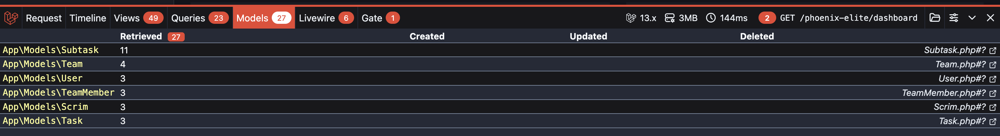
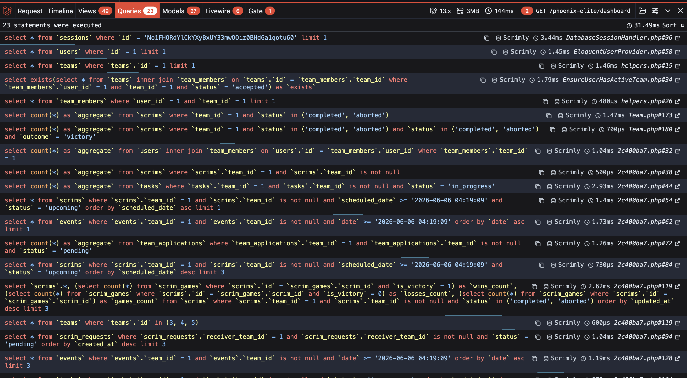
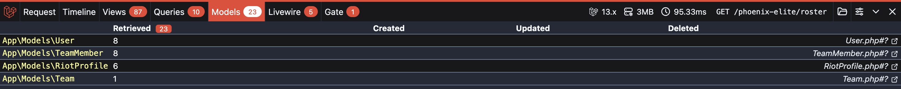
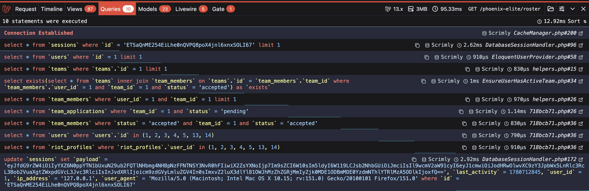
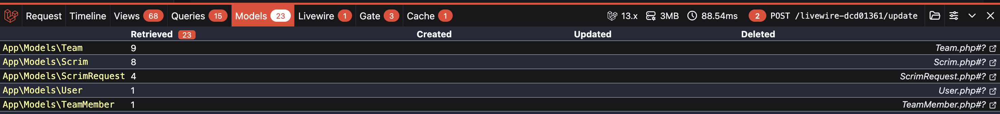
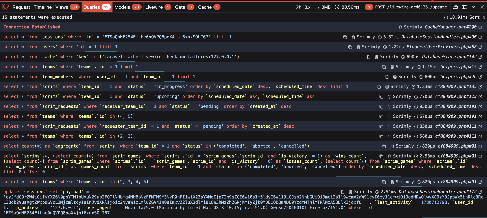
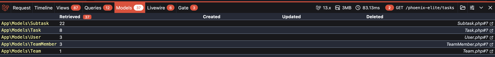
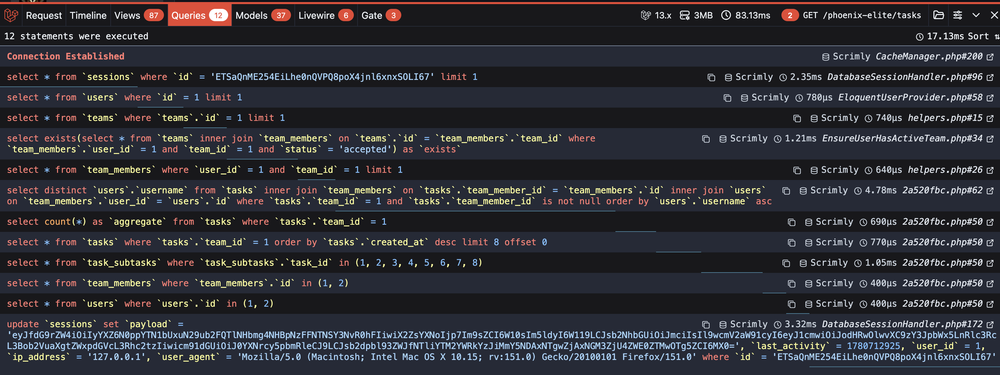

Performances côté serveur
Aperçu des performances côté serveur illustré par des captures Laravel Debugbar (requêtes SQL et modèles chargés).
Captures Laravel Debugbar
Dashboard
-

Modèles — Dashboard -

Requêtes — Dashboard
Roster
-

Modèles — Roster -

Requêtes — Roster
Scrim
-

Modèles — Scrim -

Requêtes — Scrim
Task
-

Modèles — Task -

Requêtes — Task